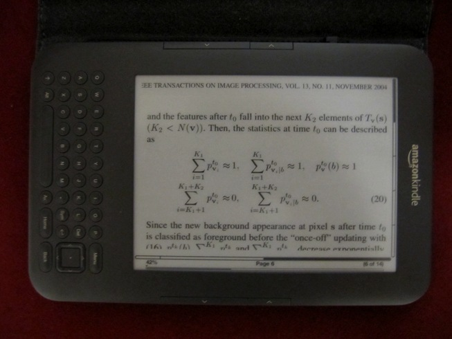
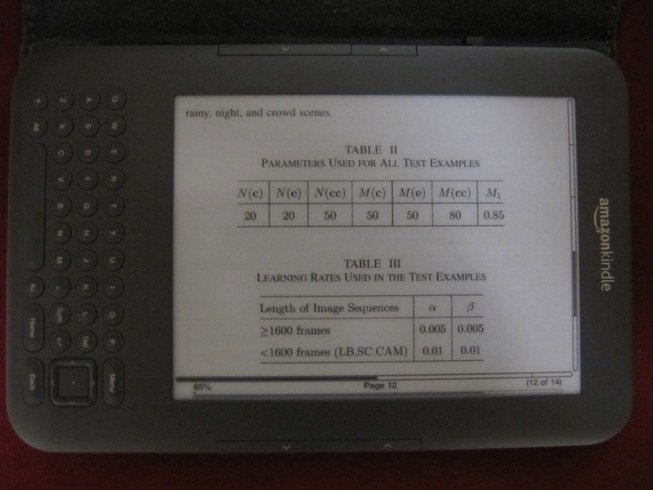
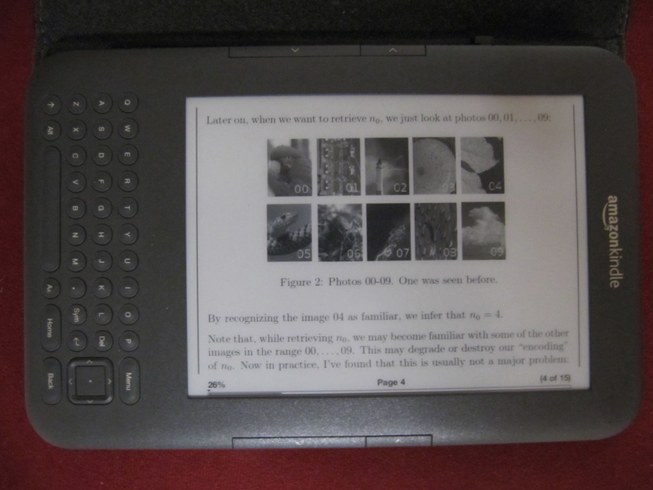
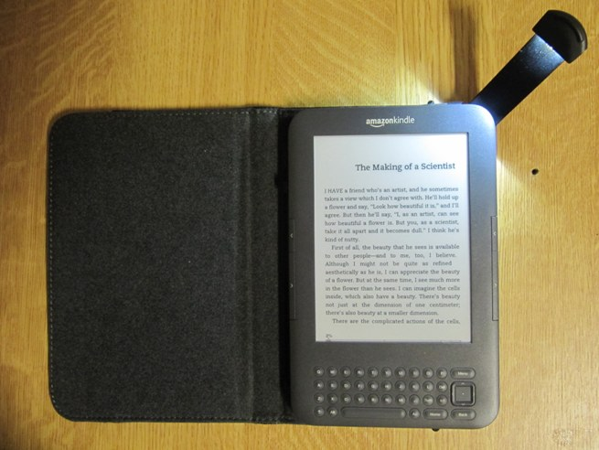

Kindle 3 değerlendirmesi ve İdefix'ten Kindle'a dönüşüm
Birkaç gün önce Kindle 3 aldım. Sadece yorumlardan ve videolardan biliyordum, tereddütlüydüm, fakat beklentimden çok daha güzel çıktı. E-mürekkep teknolojisi ağzımı açık bıraktıracak kadar hoş bir teknolojiymiş. Elime ulaştığında ekrandaki resmi kağıt sanıp çıkarmaya çalışacak kadar bihaber kalmışım bu teknolojiden! Kitap okumak için birebir bir alet. Kindle'la birlikte bir de ışıklı kılıf aldım. Gece karanlığında kitap okumanın tadına doyum olmuyor. Kindle'ı alırken hem Amazon'dan kitap alıp okumak hem de makale okumak için kullanmayı düşünmüştüm. Birkaç günlük deneyimin ardından öğrendiklerimi paylaşayım istedim.
İlk kitabımı alarak denedim, çok güzel. İster Amazon.com'daki rafınıza giderek dosyayı bilgisayara indirip ordan USB ile Kindle'a atıyorsunuz, ister Kindle ile kablosuz ağa bağlanıp doğrudan indiriyorsunuz. Bunun yanında kitaplarınızı Cloud Reader ile bilgisayarınızda veya Kindle for Android ile akıllı telefonunuzda okuyabiliyorsunuz. Bu yazılımlar kitapta nerede kaldığınızı, yer imlerinizi ve notlarınızı eşliyor, böylece bir sonraki okumanızda kaldığınız yerden devam edebilmenizi sağlıyor. Elbette bunun için okuduğunuz aracın İnternet erişiminin olması lazım. Yani farz-ı misal gece İnternet'e bağlı Kindle'dan kitabınızı okuyordunuz, uykunuz geldi yattınız uyudunuz. Sabah işe giderken otobüste trafiğe takıldınız, Android ile kaldığınız yerden devam edebiliyorsunuz.
Söylemeden geçmeyeyim; her ne hikmetse, ben Kindle'ı Amazon.com'dan almama rağmen Kindle hesabımı Amazon.de'ye kaydetmişler. Amazon.com'dan e-kitap alamıyordum, Amazon.de'den alın diye uyarı veriyordu. Biraz kurcaladım. Almanya adresim vardı, onu sildim, ABD adresi ekledim. Sonra Amazon.de'ye girip hesabımı Amazon.com'a taşı dedim. Ve sorun çözüldü.
Amazon'daki tüm e-kitaplar paralı değil, tonla ücretsiz kitap mevcut. İçlerinde birçok dünya klasiği var. Tek tıkla indirip okumaya başlayabiliyorsunuz.
Kindle'daki İngilizce sözlük sayesinde bilmediğiniz kelimelere hızlıca bakabiliyorsunuz, kelimenin konumuna göre sayfanın altında veya üstünde kısaca ne olduğu yazıyor, isterseniz ayrıntılı açıklamaya da bakabiliyorsunuz. İçinde iki tane sözlük geliyor. Sözlüğü değiştirmek mümkün. Baktım, Amazon'da maalesef Türkçe büyük bir sözlük yok. Cep sözlüğü var bir tane. Onda da çoğu kelime yoktur zaten diye düşünüp esgeçtim.
İçinde ses sentezleyici var. Kullanmasam da güzel bir özellik. Önceden bilmediğim ama görünce hoşuma giden özelliği ise mp3 çalabilmesi. Kitap okurken ister Kindle'daki hoparlörden ister kulaklığınızdan müzik dinleyebiliyorsunuz.
Gelelim ikinci konuya. Yani PDF makaleleri Kindle'da okumaya. Kindle'ı almadan önce şu değerlendirme yazısını okumuş ve oradan ümitlenerek almıştım. Yazılanlar ile birebir örtüşüyor diyebilirim. Özetle, Kindle'da makaleleri yatay şekilde okumak gerekiyor. PDF içinde Kindle'ın e-kitap formatında olduğu kadar çeşitli ayar yapamıyorsunuz. Örneğin metin tiplerini değiştiremiyorsunuz, PDF içindeki fontlar nasılsa öyle görünüyor. Zaten PDF'i bilgisayarda görüntülerken de durum aynı. Matematiksel formüller Kindle'da düzgün görüntüleniyor. Bilinmesi gereken konu, e-mürekkepin siyah beyaz olduğu. Dolayısıyla renkli makaleleri siyah beyaz çıktı almışsınız gibi düşünebilirsiniz. Üşenmedim, birkaç fotoğraf çektim. Fotoğrafların görüntüsü biraz kötü çıktı ama olsun, buyrun:


Görüntüler maalesef biraz bulanık çıktı ama fikir vermesi açısından iyi. Görüldüğü üzere çift sütunlu makalelerde yakınlaştırma yapıp bakmak gerekiyor ve formüller de, tablolar da gayet düzgün görünüyor. Tek sütunlu makaleler genelde yatay okumada sayfaya sığıyor. Ve normalde renkli olan resimler görüldüğü üzere siyah beyaz görüntüleniyor.
Bir de ışıklı haliyle ilk kitabımın ilk sayfasını çekeyim:

Şahane!
Ve şimdi de memleket insanı olarak merak ettiğimiz konuya gelelim. Amazon'da 100000 kadar kitap var. Peki dilimizde e-kitap okuyabilececek miyiz? Güzel haber, evet! Kötü haber, dilimizdeki e-kitap sayısı maalesef çok az. Amazon'daki kitaplardan sadece birkaçı Türkçe. En çok Türkçe e-kitap İdefix'de; reyonunda şu an itibariyle 1897 kitap var. Çok az ama zamanla artacağını umuyorum.
İdefix'teki kitapları okumak için farklı seçenekler mevcut. Örneğin Kitaplık uygulamasını kurarsanız Android ile okumak mümkün. Ya da Adobe Digital Editions ile bilgisayarınıza indirip okuyabiliyorsunuz. Ama durum şu ki İdefix'teki kitapları Kindle'da doğrudan okuyamıyorsunuz. Bunun için biraz takla atmak gerekiyor. Ama taklalar çok zor değil. Reçete şöyle:
- Bilgisayarınıza Adobe Digital Editions, ePUBee DRM Removal ve Calibre programlarını kurun.
- İdefix'ten aldığınız e-kitabın bilgilerini içeren dosyayı İdefix kitaplığınızdan bilgisayarınıza indirin.
- Bu dosyayı Adobe Digital Editions ile açın. İnternetten kitabınızı indirecek ve belgelerinizde bir klasöre kaydedecek.
- ePUBee DRM Removal programını çalıştırın ve indirmiş olduğunuz kitabın DRM'ini kaldırın. (DİKKAT! Bu işlemi yaparak kitabın telif hakkını ihlal etmiş oluyorsunuz. Ben bunu yaparak zaten satın almış olduğum kitabımı sadece Kindle'ıma yüklüyorum ve bu dosyaları hiçbir şekilde paylaşmıyorum, sonradan siliyorum. Paylaşmak hem yasa dışıdır, hem de yayınevlerinin e-kitap yayınlama konusundaki hevesini kırarak e-kitapların dilimizde yaygınlaşmasını engeller. Yapacağınız işlemlerden bu reçetenin yazarı sorumlu değildir!)
- Calibre programını çalıştırın ve DRM'i kaldırılmış kitabınızı Calibre'de açın (ya da penceresinin üstüne sürükleyip bırakın).
- Calibre'de açılan kitabınızın üstüne sağ tıklayıp "Convert Books" -> "Cnvert individually" seçeneğini tıklayın ve açılan pencerede kitabın bilgilerini kontrol edip sağ üstteki "output format" seçeneğini MOBI olarak seçtikten sonra OK tuşuna basın. Sağ altta "Jobs" yazan yerde 1 tane iş göreceksiniz. Onun bitmesini bekleyin.
- Bitince kitabınızın üstüne sağ tıklayın. "Save to disk" -> "Save only MOBI format to disk" seçeneği ile mobi uzantılı dosyayı Kindle'ınıza USB bağlantısı ile yükleyin.
- Artık kitabı Kindle'da okuyabilirsiniz. İşlemden sonra kitabın kopyasını bilgisayarınızdan kaldırın.
- Kitabı okuyunca kitabınızı Kindle'dan da kaldırın. Merak etmeyin satın aldığınız kitaplar İdefix kitaplığınızda durmaya devam eder. Telif haklarını ihlal etmeyin ve kitabın kopyasını paylaşmayın.


60 yorum
Bu cihazın (eksik biliyor olabilirim) tek eksiği kitabın üzerine karalama yapmamıza izin vermemesi.Öyle asus'un cihazları felanda var. Çoğu insan kitap okuyup ders çalışırken kuru kuruya bakmayı tercih etmiyor .
Harika bir yazi olmus, tam bu aralar Kindle almayi dusunuyordum ben de. Tek cekincem boyutu idi, ufak kalmiyor degil mi?
Yazıyı okuduktan ve fotoğrafları gördükten sonra özenmemek elde değil. Kitapları tutarak, sayfaları elinle tek tek karıştırarak okumanın zevki elbet bir başka; ama mesleki,teknik kitapların kalınlığı düşününce bilgiye her yerden ulaşmak konusunda blog sahibin epey bir şanslı olduğu söylenebilir.
Aslında aklıma bir an başka bir şey geldi 4.maddeyi okuyuverince. Bu sene kendisiyle İstanbul'a geldiğinde tanışma, konuşma fırsatı elde ettiğim Richard Stallman'ın, kendi yazılarından derleme olan "Özgür Yazılım, Özgür Toplum" kitabında telif hakları ve patentlerden bolca bahsedilmekteydi. Gerçi o işin yazılım tarafı ile ilgilense de kitabının bir bölümünde ( http://www.emo.org.tr/ekler/7c6326a2cfccd2f_ek.pdf 168.sayfa ) kitaplar, e-kitaplar, telif hakları ile birkaç düşüncesini paylaşmıştı. Bir an aklıma onlar geliverdi.
Her neyse. Güle güle kullanın. :)
Selam İsmail,
Amazon.com da ülke olarak Türkiye seçilince "Unfortunately, we are currently unable to ship Kindles or offer Kindle content in Turkey" diye uyarı veriyor. Sen alırken de bu uyarı var mıydı? Ne yapmak gerekir.
@A. Tahir İnce: Cihazda bir klavye var. Belli bir kısım yazının (pdf'te desteklenmiyor, e-kitap formatında olmalı) altını çizmek, yer imi eklemek mümkün. Ayrıca klavyeden not almak da mümkün. Klavyesi elle yazmak veya bilgisayar klavyesi kullanmak kadar olmasa da iyi sayılır. Ama tabii ki elde kalem ile çıktı alınmış bir kağıtta çizikler atmak, notlar alıvermek kadar pratik değil. Ben de öylesini daha çok seviyorum.
@Deniz: Kitap okumak için hiç ufak sayılmaz. İdefix'ten aldığım kitabı okurken de, Amazon'dan aldığımı okurken de çok rahat ettim. Makaleler için çok büyük sağılmaz. Yatay çevirmeden makale okumak zor. Yatay çevirince gayet iyi. Günlük makale okumak için çok çok pratik olmayabilir fakat İstanbul'da yollarda veya başka nedenlerle beklerken geçen zamanı düşününce oralarda birebir. Bu arada bilgisayardan sıkılınca da Kindle'a geçtiğim oluyor. Makaleye odaklanmak için daha iyi buluyorum onda okumayı. Bilgisayarda çabuk dağılıyorum.
Bir de büyük olanı var: Kindle DX. Ama onda Wi-Fi yokmuş ve biraz pahalı geldi benim gözüme. Hem yolda kitap okumak için de biraz büyük bence. Kindle 3 tam kararında.
@Lipsum: Teşekkürler :)
Yazıyı okudum. Dokunduğu noktalar çok doğru. Bu özgürlüklerimizi korumamız lazım. Bildiğim kadarıyla Kindle'da bir kitabı arkadaşa ödünç vermek mümkün ama onun da Kindle'ı olması gerekiyor ki bu ödünç verme olabilsin. Kütüphaneden e-kitap ödünç almak var mı bilmiyorum. Benim kaygım her şeyin korsanını kullanmaya alışmış ve sırf bunun yaygınlığından dolayı her programı kırarak kullanan ve böylece özgür yazılımdan bihaber olan memleketim insanının zihniyetinin e-kitaplara da yansıması ve e-kitapların hiç satılamaması.
@Ufuk Ben şu sıralar Çek Cumhuriyeti'nde bir projede çalışıyorum. Yirmi dolar fazladan vererek ve ek vergi ödemeden buraya gönderildiğini öğrendim ve geldiğim zaman arkadaşımın adresini vererek buraya yollattım. Maalesef Türkiye'ye göndermiyorlar. Hesaplı olması için yurtdışına çıkınca almak ya da yurtdışındaki bir arkadaşa ısmarlamak lazım maalesef.
Çok teşekkürler.İdefixten kitap almıştım bir türlü yükleyememiştim kindla, sayenizde yapabildim.Ben 10 gün önce gittigidiyor üzerinden almıştım kindlı.Yurt dışından getiren bir satıcı vardı hala satıyor sanırım.Fakat yeni gümrük yasasıyla 150 euro olan sınır 75 e düşünce gümrükte takılma ihtimali var artık.
@mesut: Rica ederim. Güle güle kullanın.
merhaba,
öncelikle çok faydalı bir yazı yazmışınız bunun için teşekkür ediyorum. ben idefix'ten bir kitap indirip anlattığınız gibi kitabı kindle'a attım fakat türkçe karakter sorunu oldu. bunun nasıl halledebilirim acaba bir bilginiz var mı?
teşekkürler.
@erde Merhaba. Ben iki kitap almıştım, biri "Motosiklete Dair" isimli kitap. Bahsettiğim gibi yapınca ikisinde de sorun yaşamamıştım. Şimdi tekrar baktım. Karakter kodlaması ile ilgili bir ayar da göremedim. İngilizce Windows 7 kullanıyorum fakat klavye, saat ayarlarım falan Türkçe/Türkiye. Programları da varsayılan halleriyle kullanıyorum.
merhaba.ben bir şeyi denemenizi isteyecektim."http://tarihvemedeniyet.org/e-kutuphane/osmanlica-kitaplar" sitesinden indireceğiniz bir kaç osmanlıca kitabı kindle ile denemenizi isteyecektim.resmini de çekerseniz çok iyi olur.teşekkürler.
Merhaba, gösterdiğiniz kitaplar PDF formatında. Resim olarak verdğim makalelerle aynı yani. Kindle'ın kendi formatında veya genel e-kitap formatında olmadığı için romanlar gibi gösterilmez. Ayrıca PDF'ler sayfaların resim olarak taratılması ile oluşturulmuş, yani optik karakter okuyarak Osmanlıca harfler taranmamış, tüm sayfa resim olarak taratılmış. Bunu e-kitap formatına çevirmek için öncelikle karakterlerin elde edilmiş olması lazım.
Merhaba Ismail,
Gercekten cok iyi ve faydali bir yazi olmus. Daha Kindle'i acarken hemen bu sayfayi da actim rehber niyetine. Turkce kitaplar umarim daha da yayginlasir ve gelisir tabii bunun icin biz kullanicilarin da e-kitap satin alarak destek vermesi gerekiyor.
Eline, zihnine saglik. Tesekkur ederim...
@Fidan: Hayırlı olsun, güle güle oku :)
aslında ben de pdf formatında nasıl gösterdiğini merak ediyordum. görüntü kalitesi nasıl?okunmasında bir sorun var mı?sayfanın enine ve boyuna ne kadarını içine alıyor? oradaki kitaplar iki taraflı sayfalar olarak tarandığı için geniş olabiliyor.bilgisayarda olduğu gibi kindle de tek taraflı olarak gösterebiliyor mu sayfayı? kopya korumalı pdf leri açmıyor diye okumuştum onlarda öyle bir sorun var mı? .zaten pdfleri dönüştürmemek daha iyi gibi çünkü sayfalar kaydığı için dipnotlarda sorun oluşur ki zaten dediğiniz gibi dönüştürme şansı olmayan pdf ler bunlar.size tekrardan zahmet vermiş olacam ama yazarsanız sevinirim teşekkürler.
kindle de resim olarakta olsa eski yazı (osmanlıca ) bir sayfa görmek güzel olurdu. bende almayı düşünüyorum param olursa.
@emre: Altta iki tane resim var. Osmanlıca PDF okumak için pek uygun değil bence. Diğer kitaplardaki tadı vermiyor kesinlikle. Sırf bu iş için tavsiye etmem. Tek sütunlu PDF'ler için çok kullanışlı değil. Yazılar küçük kalıyor. Büyütünce de sağa sola kaymak gerekiyor sürekli. Yatay tutunca dahi küçük kalabiliyor.
http://img696.imageshack.us/img696/3917/kindleosmanlica1.jpg
http://img845.imageshack.us/img845/3981/kindleosmanlica2.jpg
teşekkür ederim ismail,sağol.
Kindle kitap okuyucu konusundaki yorumları için ismail beye teşekkür ederim.
Bende Kindle dx inernational kullanıcısıyım,300 gb gibi bir e kitap arşivim var bu arşiv harici650 gb bir hard diskte, cihazdan son derece memnunum.
kindle dx wifisi olmasada e kitap okuması sonderece konforlu ve rahat, pdf format bir bir kitap sayfasını bir bütün olarak ekrana sığdırabilmekte.
sözün kısası kindle bir kitap okuyucu ve görevini son derece başarılı olarak yerine getirmektedir.Bunun dışındaki beklentilerimizi ilgili yerlerden gidermekte yarar vardır.
Son olarak birkaç proram yardımı ile bütün formatlardaki e kitapları kindlede okuyabilmektediz.Google motoruna kindle e kitaplar arattığımızda 1500 adetten fazla mobi ve kitap sitelerinde yüzlerce tükçe ,binlerce İngilizce kitap çıkacaktır, kitaplar legaldir,ilegaldir bundan sonrası beni aşıyor tercih sizlere kalıyor.esen kalın
muharrembey
@muharrembey: Kindle DX dediğiniz gibi PDF'ler için daha uygun bir tercih. Yorumunuz için teşekkür ederim.
Merhaba İsmail Bey,
Ben işitme engelliyim,uzuzn zamandan beri e kitapları bilgisayarda okuyordum,evvela gözlük sonra gözlük numaraları değişir oldu uzuzn süreli bilgisayar ekranında kalmak çok sakıncalı gözlerde oluşan görme kayıplarınıda hiçbirşey geriye getirmiyor,arayış içine girerek kitapları okuyabileceğim sağlıklı cihaz arayışımda e ink cihazalrın göze hiçbir zararı olmadığını okudum,bu cihazları kullananlarla görüşmemde onlarda doğruladı yaptığım araştırmada fiyatı yüksek gibi görünsede ben 2. elden bir amazon kinle dx e kitap okuyucuyu 500 liraya aldım,kargoda satıcıya ait,karta 6 taksitte yaptık.ara bulasın dahası satın aldığımda cihaz sorunlu olabilir endişeme satıcı bir sorunla karşılaş hemen geri alırım güvencesi ile satın aldım.şükür cihaz tıkır tıkır çalışıyor,kindle dx enerji kullanımında oldukça cimri günde 4-5 saat kitap okuyorum,haftalarca şarz istemiyor.1 metreden berisini göremeyen bir kişi olarak iyiki dx model seçmişim.
kinndle dx cihazımın kılıfı yoktu,orijinal kılfta pahalı bir anabritannice yıılığının sayfalarını çıkardım cilt kapağının içine bir suni geri yapıltırdım,don lastiği ile kindleyi tutturdum,al size kılıf elimde sanki kitap var bazı zamanlar öyle dalıyorumki elim dilime gidiyor ıslatıp sayfa çevireceğim,okuduğum kinle olduğu akılma gekince kendi kendime gülüyorum.bir kere öğretmen oğlum gördü koyuverdi kahkahayı baba cihazı yine kağıt kitap sandın diye. Diye bilirimki mobi e güzel taranmış kitaplar çok net okunuyor,hızlı ve düşük pikselde taranmış kitaplar biraz sönük buda kindleden değil tarama kalitesinin bozukluğundan kitap ilegal ve bedava olunca eh razı oluyorum.sanırım farkına varmadan kindlenin reklamını yaptık,ama kaliteli ürün övgüyü hak ediyor.
esen kalın
@muharrembey: Çok bilgilendirici bir yorum yazmışsınız, teşekkür ederim. Dediğiniz gibi biraz reklam yapmış olduk ama olsun, hak ediyor gerçekten de. Esenlikler.
"...Kütüphaneden e-kitap ödünç almak var mı bilmiyorum."
Bugün denk geldim. Kindle tutkunlarına güzel haber varmış. Abd'deki halk kütühaneleri artık ödünç e-kitap veriyormuş.
http://www.darkhardware.com/haber/amazon-kitapliktan-e-kitap-odunc-alma-donemini-baslatiyor
http://www.zdnet.com/blog/perlow/how-to-get-kindle-books-from-your-library-video/18756
@Lipsum: Darısı bizim de başımıza :)
Merhaba,
bende amazon.com uzerinden uye oldum ve adresim amerika adresi fakat cihazi alman bir arkadasim almisti benim icin, welcome yazilari hala almanca.. Amazon.de'ye girip hesabımı Amazon.com'a taşıdim demissiniz bunu nasil yaptiniz, saatlerdir arastiriyorum bulamadim.
Tesekkurler,
@Ozge: Baktım sayfaya, fakat artık "hesabınız burda değil, Amazon.com'da" gibisinden bir yazı yazdığı için göremiyorum o seçenekleri. Ben zaten Amazon.com'dan almıştım, neden Amazon.de'ye bağladıklarına da anlam verememiştim. Bundan kaynaklanıyor olabilir mi? http://www.amazon.de/manageyourkindle veya http://www.amazon.com/manageyourkindle adresinde bununla ilgili bir link olmalı. Chrome kullanıyorsanız sayfayı İngilizceye çevirip bakabilirsiniz. Şu adreste Amazon.co.uk'a taşıma ile ilgili bilgi var, Amazon.com'da benzerdi diye hatırlıyorum.
Ismail selam,
Senin olumlu degerlendirmen sonucu bir Kindle edinmeye karar verdim. 21 Kasimda cikacak Kindle Touch 3G ile Kndle Keyboard 3G arasinda kaldim. Yeni cikacak modelin farkliligi multitouch desteklemesi, ekran boyu ayni olsa da cihaz boyutlarinin daha kucuk ve agirliginin daha az olmasi. Sence not alma kolayligi acisindan fiziksel klavye mi yoksa sanal klavye mi daha avantajli? Birkac aylik kullanim sonucu eksikligini hissettigin bir seyler var mi?
Selam Başak,
Ben fiziksel klavyeliden memnunum ama diğerini hiç kullanmadım, o yüzden bir yorum yapmam sağlıklı olmaz. Sanal klavyelerde yazı yazmak zor oluyor genelde. Fiziksel de kolay. Ele alıp bir bakmak lazım derim. Bizim eleştiri de sanal kalır yoksa :)
[...] Bir Kindle 3 değerlendirmesi ve İdefix’ten alınan kitapları Kindle’da okuma yöntemi [...]
[...] Keyboard hakkında daha fazla bilgiyi bu sayfada ve bu sayfada [...]
Çift sütunlu makaleleri tek sütuna dönüştürmek için papercrop diye bir yazılım var. Böylece makaleleri okurken Kindle'da zoom ile uğraşmanıza gerek kalmıyor.
http://code.google.com/p/papercrop/
Briss'i duymuştum Ozan'dan. Bunu yeni öğrendim. Çok teşekkürler.
http://asuyatuyolar.blogspot.com/2011/10/kindle-ile-pdf-okumak.html
Yazınız benim için de cok faydalı oldu, teşekkür ederim. Resmini paylaştığınız ışıklı kindle kılıfını nasıl temin edebilirim? Teşekkür ederim.
Amazon'da satılıyor. Yalnız dikkat etmek lazım, kullandığınız Kindle'ın modeline göre farklı kılıflar olabilir.
merhaba ben amazon kındle aldım ıngılızcem yok cıhaza format atabılıyormuyuz
Maalesef hiç format atmadım. Yapmış birisi varsa buradan cevap verebilirse çok sevinirim.
Cihaza format atılıyor ancak yanımda olmadığı için söyleyemiyorum. Menüden yapılıyor.
Onun dışında bir grup kurup birarada e-kitap alsak hem çok ucuza mâlederiz, hem de kütüphanemiz genişler diye düşünüyorum. library.nu gibi.
Selam İsmail,
Emeğine sağlık, çok güzel bir değerlendirme olmuş. Text-to-speech özelliğini deneme fırsatın oldu mu?
Çok teşekkürler Seda. TTS'i denedim ama genelde hep kendim okuduğum için uzun süre beklemedim. Bir erkek, bir de kadın sesi için ses sentezleyicisi var. Hiç yoktan iyidir ama sesli kitapların yerini tutamaz. Hiç doğal duyulmuyor.
Çok güzel ve özenli bir yazı olmuş, ellerinize sağlık.
Aynı model kindle'dan ben de var ve gerçekten oldukça memnunum.
Sizin görüşlerinize genel olarak katılıyorum.
Türkçe sözlük, türkçe sesli okuma ve not alma seçenekleri hakkındaki görüşlerinizi de merak ediyorum. Sizin bu blog sayfasını yazalı epey olmuş bu nedenle iyi çözümler üretmişsinizdir.
Sevgi ve saygılarımla
Merhabalar öncelikle İsmail Arı'ya teşekkürler.
@Devrim Türkçe sözlük konusunda yardımcı olmak istedim. http://eb.lv/dict/#ez linkinde türkçe sözlük bulunmakta. Oldukça da başarılı. Sözlükler oluşturulurken ek almış sözcüklerin ya da mesela ikinci ve üçüncü haldeki fiillerin , çevrilebilmesi için özel bir sistem uygulanıyormuş sözlük hazırlanırken. Sitede başka sözlükler de var belki işine yarayacak olan vardır.
@Nazmi Site linki için çok teşekkürler. Sözlük ekleme ile ilgili yeni bir yazı ekledim.
@Devrim Türkçe ses sentezleyicisinden maalesef haberdar değilim. Biraz baktım fakat ilgili bir çalışma bulamadım.
Merhaba,
PDF veya MS word / text dökümanlarımı yüklediğimde Türkçe Fontlardan kaynaklanan sorunlar yaşar mıyım?
Yardımcı olursanız sevinirim.
İsmail öncelikle merhaba!
Çok faydalı bir paylaşım olmuş, ellerine sağlık.
Fabrika ayarlarına dönmek , yani cihazı formatlamak için:
1.Ana sayfaya geliyoruz "home tuşu ile".
2.Menü seçeneğinden Settings i seçiyoruz.
3.Settings sayfası açılınca, tekrar menü tusuna basıp, "Reset to Factory Defaults" seçeneğini tıklıyoruz.
@Burak Eline sağlık. Ben de bunu sözlük yüklerken görmüştüm, yazmaya fırsat olmamıştı. Çok çok teşekkürler.
İsmail bey,
Kindle touch almayı düşünüyorum. Ders çalışmak için...
Acaba resim şeklindeki pdf dosyarında yazının üstünü çizme veya herhangi bir şekilde işaretleme mümkün mü?
@Misafir Benimkisi Kindle 3. Maalesef dokunmatik ekran değil. Olan bir arkadaşın yardımı dokunabilir, yorum olarak girebilir.
touchlarda pdf gösteriyor ama yazı kücük ve herhsangi bi mudahelede bulunamıyosun. altını filan cizemiyon yani.
öncelikle teşekkürler.
idefix'den aldığım kitapları artık epubee ile drm kaldırma yapamıyorum. exception: access violation gibi
bir hata veriyor. öncedne böyle bir problem yoktu. acaba epublar içinde keyler mi değişiyor yeni kitaplarda? kaldırıp kurdum ama çözüm olamadı ne yapmak gerek?
Arkadaşlar merhaba,
Hepinizin yorumları için teşekkür ediyorum. Fakat ben sizden bir konuyu açıklamanızı rica edeceğim;
Yeni bir kindle touch aldım ve idefix'ten bir kitap satın aldım deneme amaçlı ve epub formatından Mobi formatına çevirdim calibre aracılığıyla ama kitabı kindle yüklediğimde karşıma çıkan durum genel gibi iyi görünsede tüm karakterler ingilizce klavye formatında yani "I yerine i veya Ü yerine U" gibi çıktı. Ben bütün karakterlerin Türkçe olması için uğraşmama rağmen henüz bir şey yapamadım.
Bana bu konuda nerede yanlış yaptığımı söylerseniz çok sevinirim
Saygılar
Verdiğiniz bilgiler için teşekkürler. Aynı cihaza sahibim. Idefix'den satın aldığım kitapları kindle'ıma transfer ettim:)
Merhaba İsmail Bey,
Verdiğiniz bilgiler harika çok teşekkürler.
Ben Kindle'ımı yeni aldım ve kullanmasını henüz tam bilemiyorum.
İdefix'den aldığım bir e-kitabı Kindle'a yüklemeye çalışıyorum. Ama sizin yazdığınız maddelerden 4.sünde takıldım. Epubor ePUB DRM Removal 1.5.3'ı açıyorum. Ama Adobe Digital Editions'a yüklediğim kitabı oraya nasıl getireceğimi bilemiyorum. ePUB programını açınca "Input Path" ve "Output Path" diye 2 satır var. Input'ta My Digital Editions geliyor ama içindeki dosyayı seçtirmiyor.
Anladığınız üzere biraz teknoloji özürlüyüm.
Yardım edebilirseniz çok sevineceğim.
Teşekkürler,
Neslihan
Tekrar merhaba,
Biraz ilerlemem var:))
Şimdi "unDRM directory" tuşunu tıkladığımda "Decrypt Output" dosyasının altına bir alt dosya açıp kitabı onun içine atıyor, ancak boyutu 0 KB. Ne yapmam gerekiyor???
Teşekkürler.
[...] Keyboard hakkında daha fazla bilgiyi bu , bu,bu ve bu [...]
[...] kopya korumaları Kindle ile uyumsuz. Arka kapılar yok değil. İsmail Arı’nın blogunda şu yazının son kısmında yolu yordamı [...]
yazdıklarınızı uyguluyorum fakat idefix ten indirdiğim e kitabı adobe digital dition da açamıyorum?
arkadaşlar pdf formatını açıyor mu ve açıyor ise onu üzerinde oynama yapabiliyor mu ( altını çizme, ekranı büyütme gibi ) ? yardımcı olursanız çok sevinirim.
PDF formatını açabiliyor. Fakat üstünde oynama yapma özelliği yok. PDF'ten makale okumayı hedefliyorsanız çok pratik değil.